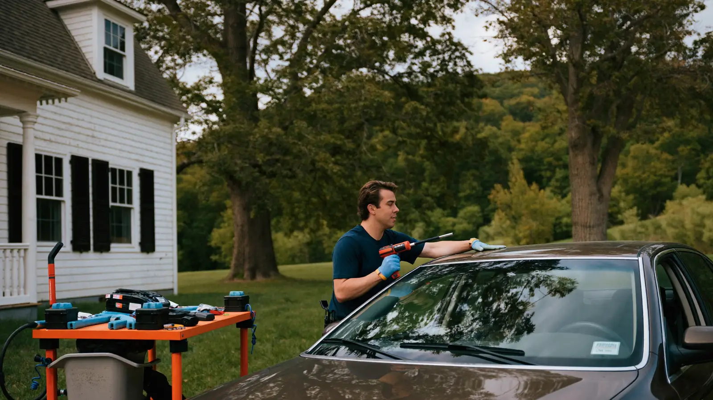
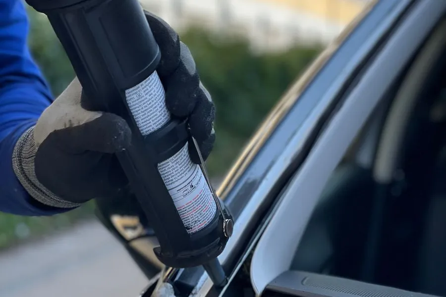

Chipped, cracked, or shattered glass doesn’t wait for a convenient day. We handle windshield replacement, chip and crack repair, and side and rear window work at your home or workplace anywhere in the Merrimack Valley.

Start Here
Auto glass repair covers two different jobs that often get lumped together: fixing damage in glass that can be saved, and replacing glass that can’t.
A repair means injecting clear resin into a chip or short crack so it stops spreading and mostly disappears. The original glass stays in the car. A replacement means cutting out the bonded windshield, prepping the pinch weld, and setting new glass in fresh urethane.
Which one you need comes down to the size of the damage, where it sits on the glass, and how long it has been there. A quarter-sized chip caught in October is usually a thirty-minute repair. That same chip after a Haverhill winter of defroster cycles is often a full windshield.
Side and rear windows work differently again. They are tempered glass, so they don’t chip — they shatter into small cubes all at once, and there is no repair option. That glass gets replaced and the door cavity gets vacuumed out.
Know the Signs
The stretch of I‑495 and Route 125 through Haverhill throws a lot of stone, especially behind trucks in sanding season. A fresh chip smaller than a quarter is the cheapest call you will ever make. Waiting turns it into glass.
Cracks spread when glass expands and contracts. Blasting the defroster onto a frozen windshield is the classic trigger. If a crack is visibly longer than it was last week, it is still moving.
Massachusetts inspects annually, and windshield damage is a documented failure item. If your sticker is close to expiring, get the glass sorted before you sit in the bay, not after.
A smashed door window leaves the car open to weather and to whoever walks by. We can usually get a temporary weather seal on the same day and the real glass in shortly after.
A whistle at highway speed or a damp headliner after rain often means a previous installation’s urethane seal has failed. That is a reset of the bond, not a patch.
If your car has a camera behind the mirror, glass work affects it. A lane‑keep or emergency‑braking warning after a replacement means the camera needs recalibrating.
The Process
You call or fill in the form. We need the year, make, and model, and whether there is a camera mounted behind the rearview mirror — that one detail changes both the glass and the price.
We give you a quote on that call. If you are going through insurance, we can tell you what the claim is likely to look like before you file it.
Then we come to you. A chip repair takes about 30 minutes in your driveway. A windshield replacement runs 60 to 90 minutes of work, plus safe drive‑away time for the urethane to cure — usually another hour, longer in cold weather.
If your vehicle needs camera recalibration, that happens after the glass is set and before we hand the keys back.

Why Us
Most of the high-volume glass shops serving this area sit in Methuen, North Andover, or over the line in Salem, New Hampshire. We work Haverhill, Bradford, Groveland, and Merrimac as our home ground, which is why we can usually offer same‑day or next‑day slots here.
A lot of quotes look cheap because they leave out ADAS recalibration and add it later. If your vehicle needs it, we tell you on the first call and it is in the number you are given.
If your damage is genuinely repairable, we say so, even though a repair bills a fraction of a replacement. A chip fixed early is a better outcome for you and it keeps the factory seal intact.
Glass claims in Massachusetts fall under comprehensive coverage, and whether you owe a deductible depends on your specific policy. We will walk through what you are likely to pay before you commit to anything.
Straight Pricing
Nobody likes a shop that dodges this question, so here are real ranges. Where you land depends mostly on whether your car has a camera behind the mirror.
| Job | What drives the price | Typical range |
|---|---|---|
| Chip or short crack repair | Number of impact points; how old the damage is | $60–$150 |
| Windshield replacement, no camera | Common sedans and older vehicles; aftermarket glass | $250–$500 |
| Windshield replacement with ADAS | Glass plus required camera recalibration | $550–$1,050 |
| ADAS recalibration on its own | Static, dynamic, or both, depending on the manufacturer | $150–$600 |
| Luxury or OEM‑required glass | Acoustic layers, heating elements, heads‑up display | $900–$1,500+ |
| Side or rear window replacement | Door disassembly; vacuuming tempered glass cubes | $200–$450 |
Two Haverhill-specific things worth knowing. Labor rates across the Boston metro run meaningfully higher than the national average, so a national price calculator will usually quote you low. And mobile service typically adds $50 to $150 at most shops — ask whether that is already in the number you were given.
If you are filing on comprehensive coverage, your out‑of‑pocket may be far less than these figures, or nothing at all. See our windshield replacement page for how Massachusetts glass claims actually work.
Self‑Check
The chip is smaller than a quarter, there is a single impact point, it sits outside the area your wipers sweep directly in front of the driver, and it happened recently. Dirt and moisture that have worked into an old chip make a clean resin bond much harder.
The crack runs longer than a dollar bill, it reaches the edge of the glass, there are several cracks running together, or the damage sits right in the driver’s line of sight. Edge cracks matter because the windshield is a structural part of the roof.
Not sure which side you fall on? Tell us where the damage sits and roughly how big it is and we will tell you honestly — if it is repairable we will say so.
Questions People Actually Ask
Massachusetts does not set a single crack length that makes driving automatically illegal, but state law lets the Registrar prohibit anything that obstructs the driver’s view, and an officer can cite you for operating an unsafe vehicle. The bigger practical risk in Haverhill is annual inspection, where windshield damage is a defined failure item. If the crack sits in your line of sight, treat it as a problem to fix now rather than a ticket to gamble on.
It can, and the rules are specific. Under the state inspection regulation a windshield fails for a stone bruise larger than one inch inside the critical viewing area, a single crack running more than three inches into that area, or multiple cracks where at least one enters it. The critical viewing area is the zone your wipers sweep, minus the outer two inches. Damage outside that zone gets more latitude, which is why placement matters as much as size.
Glass damage falls under comprehensive coverage in Massachusetts, so if you carry comprehensive you are generally covered for a windshield replacement in Haverhill. The common myth is that glass deductibles are banned here — they are not. Many insurers historically defaulted to no deductible on glass, but newer policies often include one to hold the premium down, so check your declarations page before you assume the repair is free.
Almost never. Resin repair is reliable on chips up to about the size of a quarter and on single cracks up to roughly three inches. At twelve inches the crack has usually reached the glass edge or the driver’s viewing area, and a resin fill would leave a visible line without restoring strength. A crack that long on a Haverhill vehicle is a replacement, and putting it off through a freeze‑thaw winter only risks it running further.
The physical work runs about 60 to 90 minutes for most vehicles. After that the urethane adhesive needs safe drive‑away time before the car is structurally sound again, typically around an hour in mild weather and longer when it is near freezing. If your vehicle needs ADAS camera recalibration, add roughly 30 to 60 minutes. Plan on half a day to be comfortable.
We are a mobile service, so we come to your driveway, your street, or your workplace parking lot anywhere in Haverhill and the surrounding Merrimack Valley towns. All we need is reasonable access to the vehicle and, in winter, somewhere the adhesive can cure without being buried in snow. There is no shop for you to sit in and no loaner to arrange.
If your vehicle has lane‑keep assist, adaptive cruise, or automatic emergency braking, a forward‑facing camera is mounted to the windshield behind the mirror. Moving the glass by even a millimetre or two changes what that camera sees, so the system has to be re‑taught where straight ahead is. Skipping it means the safety features are still on but aiming slightly wrong, which is worse than having them off.
Tell us the year, make, and model, and whether there is a camera behind your mirror. We will quote the glass and any recalibration together, so there is no second invoice waiting for you.
Call (351) 900-7501 for a Free Quote389 Main St Unit E, Dudley Plaza, Haverhill, MA 01830
Please note: This is our service business address — not a storefront or showroom. Haverhill Auto Glass Repair is a mobile auto glass service, so we come to you and the office isn’t open to walk-in visitors. Call us and we’ll set up a free on-site estimate.